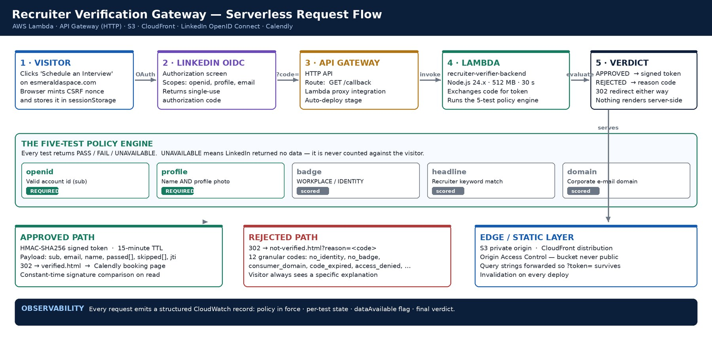
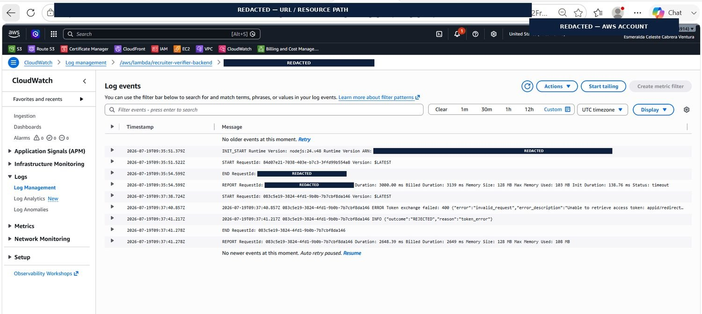

Thesis
Proof of identity, not proof of humanity
The reframing that made the rest of the system designable.
A public portfolio has to satisfy two goals that pull directly against each other. It has to be maximally reachable, so a recruiter can book time in seconds. And it has to be defended, because a naked scheduling link on a public website is an open invitation to automated form-fillers, cold-outreach spam and calendar-stuffing bots.
The usual compromises are all bad. Hiding the link behind a contact form adds friction and loses exactly the people you wanted. Publishing the raw calendar surrenders control entirely. A CAPTCHA proves the visitor is human but says nothing about whether they are relevant — a bot and a genuine hiring manager are indistinguishable to a checkbox.
So I framed the requirement differently. What the calendar needs is not proof of humanity. It is proof of professional identity: a verifiable claim, issued by a trusted third party, that the person asking for time is who they say they are. Once the requirement is stated that way, the architecture follows almost mechanically — federate the identity, adjudicate the claims server-side, and express the outcome as a credential rather than as a session.
That reframing is also what surfaced the hardest problem in the build, which is not authentication at all. It is what a policy engine should do when the identity provider declines to answer — a question a conventional pass/fail check cannot express, and gets wrong in the direction that rejects legitimate visitors.
System
Shape of the architecture
No application server. No container, no virtual machine, no database. One public route and one stateless function.
A static front end initiates a federated identity flow; a managed HTTP endpoint receives the callback; a single stateless function adjudicates it; and the outcome is expressed entirely as an HTTP redirect carrying either a signed approval token or a machine-readable rejection reason. There is no server-side session state anywhere in the system, which is a constraint I chose rather than inherited — it is what forces the approval to be a credential rather than a flag.
| Component | Technology | Responsibility I owned |
|---|---|---|
| Static front end | S3 · CloudFront · Origin Access Control | Portfolio hosting with the storage bucket never publicly addressable; the entry control mints a cryptographically random CSRF nonce, persists it to sessionStorage and hands the browser to the identity provider |
| Identity provider | LinkedIn OpenID Connect | Client registration, exact redirect-URI matching, scope selection across openid, profile and email; returns a single-use authorization code |
| Front door | API Gateway HTTP API | One route, GET /callback, Lambda proxy integration, auto-deploying stage. That single path is the entire public attack surface |
| Decision engine | Lambda · Node.js 24.x · zero dependencies | Token exchange, claim gathering, the five-test policy, credential minting or withholding, and the structured audit record |
| Approval credential | HMAC-SHA256 · base64url | Compact signed payload with a 15-minute TTL, a jti replay identifier and timing-safe verification |
| Outcome pages | Static HTML | An approval surface that greets a verified visitor and forwards to the live calendar; a rejection surface that reads a reason code and renders a specific explanation |
| Audit | CloudWatch Logs | The system of record — the policy in force, each test's state, whether its data source answered, and the final verdict |
| Authorization | IAM | Least-privilege execution role carrying log-write permissions and no standing data-plane access |
Two choices worth defending
Zero third-party dependencies was deliberate rather than minimalism for its own sake. A current Node runtime provides native fetch and ES modules, which is enough to write the entire OAuth orchestration by hand. The result is that the component making the security decision has nothing to keep patched and no supply-chain surface at all.
HTTP API over REST API followed the same reasoning. Request validators, usage plans and API keys are genuinely useful features — for a single OAuth callback route they are unused surface, at higher latency and higher cost.
The request lifecycle
Initiation
The browser generates sixteen bytes of cryptographic randomness as a CSRF nonce, persists it client-side, and redirects to the authorization endpoint with the client id, the exact registered redirect URI, the requested scopes and the nonce as state.
Authentication
The provider authenticates the visitor, obtains consent for the requested scopes, and redirects the browser back to the registered callback with a single-use authorization code.
Reception
API Gateway matches GET /callback and invokes the function through proxy integration, passing the query string intact. TLS terminates here; the function is never exposed to the raw internet.
Exchange
The function posts the code, client credentials and redirect URI to the token endpoint — server-side only, so the client secret never leaves the execution environment. Failures are classified rather than collapsed: a reused or expired code produces a retry message, not a verdict about the visitor.
Claim gathering
The function requests the OIDC userinfo document and, in parallel, attempts the privileged verification-report and headline endpoints. Denial on either is tolerated without failing the request — enrichment calls are non-fatal by design.
Adjudication
Five independent tests each return PASS, FAIL or UNAVAILABLE. The policy engine applies a mandatory set plus a minimum passing count and resolves a single verdict.
Hand-off
Approved, a signed credential is minted and the browser redirected onward with it. Rejected, the browser is redirected with a specific reason code. Either way the response is an HTTP redirect and nothing else.
Audit
A structured JSON record of the entire decision is written to CloudWatch before the invocation ends.
Engine
Designing for a provider that declines to answer
The architectural centerpiece: a third state, and the class of bug it removes.
The most interesting engineering problem in this system is one that is not obvious until you integrate against a real identity provider.
Federated providers tier their data. Standard-tier OIDC access grants exactly three scopes and no more. Richer signals — a platform verification badge, a profile headline — live behind privileged endpoints that return HTTP 403 to applications without elevated access. That 403 does not mean the visitor lacks a badge. It means the provider declined to tell you.
A conventional pass/fail check cannot express that difference. It has two outcomes and needs three, so it collapses "we don't know" into "no" — and a gate built on that collapse rejects legitimate visitors for its own lack of permission. Absence of evidence gets scored as evidence of absence. This is not a theoretical failure mode: it is exactly what the first revision did, and it rejected every visitor it saw.
Each test also reports a dataAvailable flag alongside its verdict. That flag is what makes the policy tunable on evidence rather than guesswork: production logs show exactly which sources are answering, so a discretionary rule can be promoted to mandatory when — and only when — its data is reliably present. The operations notes carry that as an explicit rule for future maintainers: never make a test mandatory while its dataAvailable flag reads false.
The five tests
| Test | What it asserts | Standing |
|---|---|---|
| Account identity | A valid account subject claim is present in the userinfo document — the visitor genuinely authenticated against the provider | Mandatory |
| Profile completeness | A display name and a profile photo are both present, which is the cheapest available signal that a profile is inhabited rather than minted | Mandatory |
| Verification badge | A platform identity or workplace verification badge is attached to the account | Scored |
| Headline keywords | The profile headline matches a curated set of eighteen recruiting and hiring terms | Scored |
| Email domain | The verified email sits on a corporate domain rather than a consumer, international-consumer or disposable provider | Scored |
The badge and headline tests are the two that live behind privileged endpoints, which is to say they are the two that return UNAVAILABLE on the production path today. They are implemented, wired and logged; they simply cannot contribute evidence until elevated access makes their data readable. The three-state design is what allows them to be shipped in that condition rather than commented out.
Policy
Admission rules as configuration
Strictness is a value, not control flow. Changing the gate does not mean rewriting logic that has already been proven correct.
The five tests do not govern admission. Two declarations sitting above them do: a veto list of tests that must actively pass, and a floor on the total number of passes. Everything else is evaluation.
That structure means the gate's strictness is a configuration value. Making corporate email mandatory is a one-line edit. Requiring one criterion beyond the mandatory pair is a one-line edit. Loosening to any two of five is a one-line edit. No logic is rewritten, so no logic can be broken in the rewriting — and the exhaustive proof in section 06 does not need to be re-derived every time the policy moves.
| Desired change | Edit | Effect on decision logic |
|---|---|---|
| Require a corporate email | add domain to the veto list | None — evaluation is unchanged |
| Require one signal beyond identity | raise the passing floor by one | None |
| Loosen to any two of five | empty the veto list, floor = 2 | None |
| Promote badge once readable | add badge to the veto list | None — gated on dataAvailable evidence |
The domain test, and enforced-but-not-blocking
The domain test is worth a note on its own. It screens against a curated deny-list of more than fifty consumer, international and disposable email providers, and rejects malformed domains outright. Today it is scored rather than mandatory — a recruiter on a consumer address is still admitted, but the failure is recorded and carried inside their issued credential.
Enforced-and-logged rather than enforced-and-blocking. The point is that the policy can be tightened later against real traffic instead of against assumptions, and the evidence needed to justify tightening it is already accumulating in the logs.
Credential
An approval that survives a redirect
There is no session to carry the decision, so the decision has to carry itself.
An approved visitor is forwarded into a static page, so the hand-off cannot rely on server session state. The function mints a compact signed credential instead: HMAC-SHA256 over a base64url payload carrying the account subject, email, display name, which tests passed, which were skipped as unavailable, issue and expiry timestamps, and a UUID replay identifier.
- Fifteen-minute expiry — long enough to book a meeting, short enough that a leaked link is worthless almost immediately
- Timing-safe comparison — signatures compared with a constant-time primitive after an explicit length check, closing a timing side-channel
- A replay identifier — every issued credential is individually addressable, which is what makes single-use enforcement possible without shared state
- Carried evidence — the passed and skipped test lists travel inside the credential, so the downstream surface knows on what basis it was admitted
The structure is deliberately JWT-shaped without inheriting JWT's algorithm-confusion pitfalls, because a format this narrow does not need the generality that causes those bugs. One algorithm, one issuer, one audience, one purpose — there is no alg field to attack because there is no algorithm choice to make.
Security controls, designed in
Because this system exists to make a security decision, and was always intended to be published, the controls were designed in rather than reviewed on afterwards.
| Control | Implementation |
|---|---|
| Federated identity | No passwords collected, stored or transmitted anywhere in the system; authentication is delegated entirely to the provider |
| CSRF protection | A cryptographically random nonce per attempt, persisted client-side and echoed through the round trip as state |
| Server-side adjudication | The browser is never trusted with any part of the decision; every claim is fetched and evaluated inside the function |
| Secret containment | The client secret is used only in the server-side token exchange and never reaches the browser under any code path |
| Origin Access Control | Conditioned on the specific distribution ARN, so the bucket cannot be read on behalf of some other distribution in another account |
| Least privilege | Execution role carries log-write permissions and no standing data-plane access |
| Fail-closed defaults | Any unhandled exception redirects to the failure page; no code path grants access on error |
| Attack surface | One public route, one HTTP method, zero third-party packages in the adjudicating function |
Proof
Proving the policy, not trusting it
Five tests across three states is a finite space. I did not sample it. I enumerated it.
Every reachable combination of the five tests across PASS, FAIL and UNAVAILABLE was generated and each evaluated against the specification — access is granted if and only if the identity and profile tests both pass — asserted independently of the implementation. All 162 resolved correctly.
The exercise earned its keep immediately: it caught a genuine defect that code review had not. An earlier revision allowed a single FAIL to veto approval even when the mandatory criteria had passed, which contradicted the intended rule. That bug is invisible to spot-checking, because the combinations that expose it are precisely the ones a developer testing their own work does not think to try.
| Identity | Profile | Badge | Headline | Domain | Verdict |
|---|---|---|---|---|---|
| PASS | PASS | PASS | PASS | PASS | Granted |
| PASS | PASS | UNAVAIL | UNAVAIL | PASS | Granted — the production path today |
| PASS | PASS | UNAVAIL | UNAVAIL | FAIL | Granted — domain is scored, not binding |
| PASS | FAIL | PASS | PASS | PASS | Declined — mandatory test failed |
| FAIL | PASS | PASS | PASS | PASS | Declined — mandatory test failed |
| PASS | UNAVAIL | UNAVAIL | UNAVAIL | PASS | Declined — mandatory data absent |
A representative extract from the 162-case matrix. Note the third row: a visitor on a consumer email address is admitted, and the failure is still recorded inside their credential. Note the last: a mandatory test that returns UNAVAILABLE declines, because "we could not establish identity" is not the same as "we do not know whether they have a badge."
Where the state space is small enough to enumerate, exhaustive proof is available for the cost of a loop, and spot-checking becomes a choice not to bother. This one is small enough. Most access-control policies are.
Rejection
Refusal as a designed outcome
Twelve reason codes, separating policy verdicts from mechanical ones.
Most gates treat a refusal as an error state and emit something generic. That is a design failure twice over: it tells a legitimate visitor nothing actionable, and it tells the operator nothing diagnostic.
Here rejection is a first-class path with its own destination page and twelve granular reason codes. Crucially, those codes separate policy outcomes from mechanical ones — a reused single-use authorization code produces a retry message rather than a verdict about the visitor, because the two situations are not the same and should not read the same.
| Code | Meaning | Code | Meaning |
|---|---|---|---|
| no_identity | No valid account identifier returned | no_email | No verified email address released |
| incomplete_profile | Missing display name or profile photo | insufficient_data | Too few criteria were readable |
| no_badge | Readable, and none present | code_expired | Sign-in link reused or expired |
| no_keyword | Readable, and no headline match | access_denied | Visitor cancelled at the provider |
| consumer_domain | Consumer or disposable email domain | bad_state | Callback reached without a code |
| token_error | Identity handshake failed | server_error | Unhandled exception |
The split down the middle of that table is the point. The left column is the policy speaking about the visitor. The right column is the machinery speaking about itself. Merging them — which is what a single generic failure page does — produces a system where a transient handshake error and a genuine policy decline are indistinguishable to the person on the receiving end and to the operator reading the logs.
Every visitor who does not get through learns precisely which criterion they did not meet, and whether retrying will help.
Operations
Instrumented so the live system can be reasoned about
Every decision reconstructable from logs alone, without reproducing it.
Every request emits a structured JSON decision record: the policy in force, each test's state, whether its data source actually answered, and the final verdict. Any decision the gate has ever made can be reconstructed from logs without re-running it — which matters more than it sounds for a system whose inputs come from a third party and cannot be replayed on demand.
How the function was sized
Those same logs are how the function was configured rather than guessed at. The execution report showed peak memory of 103 MB, so the 512 MB configuration carries real headroom. On Lambda that setting matters more than it looks, because CPU is allocated proportionally to configured memory. Under-provisioning memory throttles the processor, which lengthens cold starts, which pushes the function toward its timeout. The two limits are coupled, and sizing either one without measuring the other is how serverless functions acquire intermittent failures that are miserable to diagnose.
The timeout is set at 30 seconds against a multi-hop external identity handshake, for the same reason: a cold start plus a conversation with a third-party provider is not a sub-second operation, and configuring it as though it were converts a slow request into an opaque failure.
Both configuration corrections are recorded in the project's operations notes alongside the evidence that justified them — confirmed in CloudWatch, the function used 103 MB against its ceiling — so a future maintainer inherits the reasoning and not merely the values. A number in a config file with no recorded provenance is a number nobody will ever feel safe changing.
Build
The running system
Captured from the live deployment. Account numbers, resource identifiers, endpoints, distribution identifiers, client secrets, signing keys and tokens are permanently redacted.


Scope
Where the boundary actually sits
Being precise about the limits of a security control is part of building one.
This gate raises the cost of abuse substantially. It converts an anonymous click into an authenticated, adjudicated, logged decision, and it does so with zero idle cost and a single public route. Legitimate visitors get through in seconds without a form, and every refusal is explained.
What it does not do is make the underlying booking URL unreachable to someone who already has it, because the success page is a static document and a static document cannot hold a signing key. That scope was chosen deliberately, and stating it plainly is not a caveat bolted on at the end — knowing precisely where your security boundary sits is itself a security control.
The next increment, already specified
- Mint single-use booking links through the scheduling provider's API from inside the function, so approval is enforced rather than presented
- Move credentials into a managed secret store with automatic rotation
- Promote the badge and headline tests to mandatory once elevated access makes their data reliable — a change the three-state design already anticipates and the enumeration already covers
- Express the whole stack as infrastructure as code, so the environment is reproducible rather than described
| Capability | State | Note |
|---|---|---|
| Federated identity flow | Shipped | Authorization code exchange, CSRF nonce round trip, exact redirect-URI registration |
| Tri-state policy engine | Shipped | Five tests, veto set plus passing floor, exhaustively verified across 162 states |
| Signed approval credential | Shipped | HMAC-SHA256, 15-minute TTL, replay identifier, timing-safe verification |
| Failure taxonomy | Shipped | Twelve reason codes rendered as specific explanations, policy separated from mechanical |
| Structured audit logging | Shipped | Full decision record per request; the basis for both tuning and sizing |
| Static delivery & origin lockdown | Shipped | CloudFront with Origin Access Control conditioned on the distribution ARN |
| Badge & headline evaluation | Prototype | Implemented and logged; returns UNAVAILABLE until elevated provider access is granted |
| Domain enforcement | Prototype | Scored and recorded rather than blocking, pending real-traffic evidence |
| Single-use booking links | Deferred | Specified; requires provider API access. Closes the one gap named above |
| Managed secret rotation | Deferred | Credentials currently held as environment configuration |
| Infrastructure as code | Deferred | Stack is documented but provisioned by hand |
| Replay-identifier persistence | Deferred | Credentials carry a jti; enforcing single use needs a store the design currently avoids |